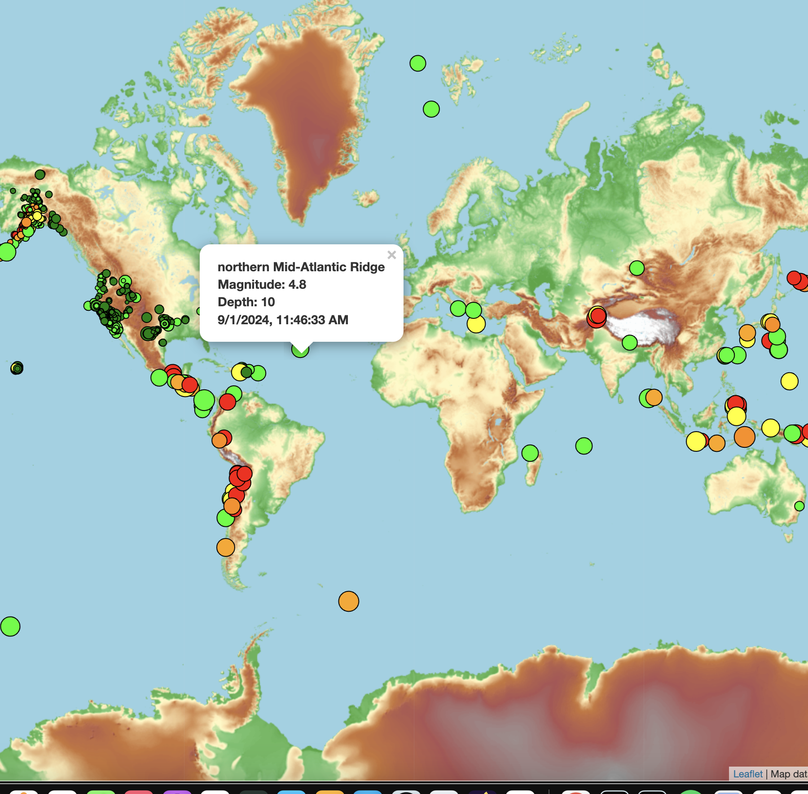

Data Analyst
RESUME GitHubObjective
A motivated and analytical professional with a strong foundation in data analytics, seeking an entry-level position to leverage technical skills in data analysis, statistical modeling, and data visualization to support data-driven decision-making processes.
Education
Data Analytics Bootcamp
University of Pennsylvania – Philadelphia, PA
03/2024 – Present
- Gained proficiency in technologies including Excel, Python, JavaScript, SQL Databases, Tableau, and more.
- Developed a professional portfolio showcasing a range of data projects, from statistical modeling to web-based interactive visualizations.
- Collaborated on group projects to solve real-world problems using data analytics.
Technical Skills
- Programming Languages: Python, JavaScript, HTML, CSS, SQL
- Data Analysis: Excel (including VBA scripting), Pandas, NumPy, Matplotlib
- Databases: PostgreSQL, MongoDB
- Data Visualization: Tableau, Matplotlib, HTML/CSS, JavaScript libraries (e.g., Leaflet)
- Web Development: HTML, CSS, JavaScript
- Other Tools: GitHub, JSON, APIs, Hadoop, Machine Learning basics
Projects
VBA Analysis
Excel Automation with VBA
- Built VBA scripts in Excel to automate manual processes, significantly reducing time spent on repetitive tasks.
- Applied statistical modeling techniques to analyze historic stock trends and predict future market behavior.
Leaflet Analysis
Data Visualization Application
- Developed an interactive data visualization web application using HTML, CSS, JavaScript, and Leaflet to map and analyze geographic data.
- Integrated data from APIs and used Python for data cleaning and manipulation.
- Created dynamic, user-friendly visualizations to showcase data insights.
Pymongo Analysis
SQL and MongoDB Data Management
- Worked with PostgreSQL and MongoDB to manage and retrieve data efficiently.
- Wrote complex SQL queries to perform CRUD operations and combined multiple datasets for comprehensive analysis.
- Implemented ethical considerations in data handling, focusing on privacy and algorithmic bias.
Deep Learning Analysis
Neural Networks and Model Performance Evaluation
- Developed deep learning models using TensorFlow and Keras to analyze complex datasets and extract meaningful insights.
- Trained convolutional neural networks (CNNs) to classify images and applied various optimization techniques to improve model accuracy.
- Utilized Recurrent Neural Networks (RNNs) and Long Short-Term Memory (LSTM) networks to predict time-series data.
- Applied techniques such as dropout, batch normalization, and early stopping to prevent overfitting and ensure model generalization.
- Evaluated model performance using metrics such as accuracy, precision, recall, and F1 score, and visualized the results using confusion matrices and ROC curves. <<<<<<< HEAD =======
- View Project on Google Colab >>>>>>> 0a8a0d8 (changes)
Applications
Earthquake Map
Bellybutton Biodiversity Dashboard